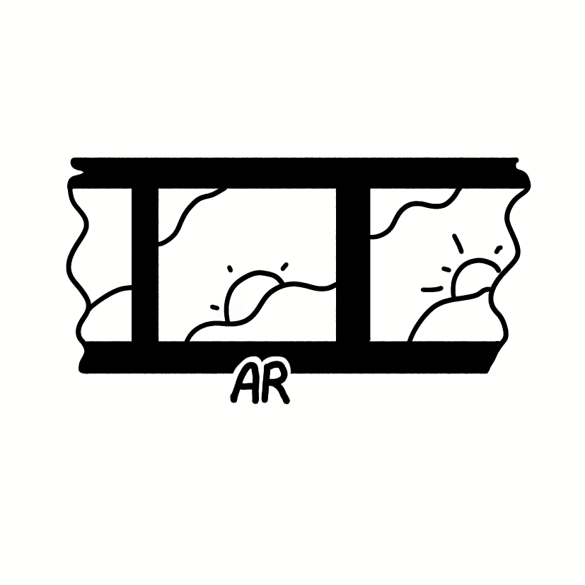

Линогравюра · AR
Наведите камеру на метку в книге
Как пользоваться
- Откройте книгу на странице с меткой AR
- Наведите камеру так, чтобы метка попала в кадр
- Дождитесь появления дополнительного контента
- Чтобы отсканировать другую метку — нажмите кнопку внизу


